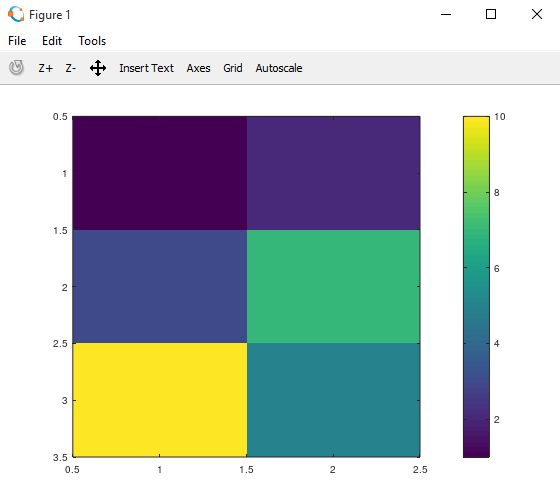

HOME BLOG EBOOKS ABOUT CONTACT SHOP
GNU Octave is Open source software featuring a high-level programming language, primarily intended for numerical computations. Octave is one of the major free alternatives to MATLAB.The appropriate version of octave can be downloaded from the link: Download. Installation is straightforward.
In this section and the next we’ll run you through basic octave commands (Mostly matrices & plotting graphs)
Matrices can be defined using square brackets in octave. The elements of a row are separated using space or a comma. The columns are separated using semicolon.
>> A = [1 2; 3 4; 5 6]
A =
1 2
3 4
5 6
The above shown is a 2×3 matrix and it is denoted by the variable name ‘A’.
#add a semicolon after the command if u dont want to print the output.
>> B = [1 2 3]
B =
1 2 3
>> C = [1;2;3]
C =
1
2
3
There are many other ways to declare matrices and they can be used appropriate according to the situation.
#row vector that starts with 1, and each element is incremented by 0.1 till 2
>> D = 1:0.1:2
D =
1.0000 1.1000 1.2000 1.3000 1.4000 1.5000 1.6000 1.7000 1.8000 1.9000 2.0000
#row matrix that starts with 2, incremented by 1 till 6.
>> E = 2:6
E =
2 3 4 5 6
#Generating a matrix of order 3×4 with all elements 1
>> F = ones(3,4)
F =
1 1 1 1
1 1 1 1
1 1 1 1
#Multiplying a matrix by a scalar (a number)
>> G = 1.4 * B
G =
1.4000 2.8000 4.2000
#Generating a random matrix of order 2×3
>> H = rand(2,3)
H =
0.72340 0.94194 0.97331
0.42416 0.50179 0.19105
#Generating an identity matrix of order 5×5
>>I = eye(5)
I =
Diagonal Matrix
1 0 0 0 0
0 1 0 0 0
0 0 1 0 0
0 0 0 1 0
0 0 0 0 1
>> size(A)
ans =
3 2
This command is used to obtain the size of a matrix. The output itself is 1×2 matrix with the no of rows and the no of columns displayed.
#Obtain the no of rows of a matrix
>> size(A,1)
ans = 3
#Obtain the no of columns of a matrix
>> size(A,2)
ans = 2
#length of the longer dimension of a matrix
>> length(A)
ans = 3
#Obtain the element (3,2) of a matrix (if it exists)
>> A(3,2)
ans = 6
#Obtain all elements of 2nd row
>> A(2,:)
ans =
3 4
#Obtain all elements of 1st column
>> A(:,1)
ans =
1
3
5
#Obtain all elements of 1st & 3rd row
>> A([1,3],:)
ans =
1 2
5 6
#replace element (3,2) with 1
>> A(3,2) = 1
A =
1 2
3 4
5 1
#replace all elements of 2nd column by new elements
>> A(:,2) = [1;3;4]
ans =
1 1
3 3
5 4
#Matrix Multiplication
>> J = B*A
J =
22 19
Remember that matrix multiplication is only possible when the no of columns of the first matrix is equal to the no of rows of the second matrix.
#Element wise Multiplication
>> K = G.*B
K =
1.4000 5.6000 12.6000
In element wise operations, each element of a matrix is operated with the corresponding element of the second matrix of same order.
#Matrix Addition
>> L=A+A
L =
2 2
6 6
10 8
#transpose of a matrix
>> M = A’
M =
1 3 5
1 3 4
#returns 1/0 (true/false) by checking the condition for each element
>> A<3
ans =
1 1
0 0
0 0
#returns max value in each column
>> max(A)
ans =
5 4
#returns max value in each row
>> max(A,[],2)
ans =
1
3
2
#puts all elements into a column vector
>> A(:)
ans =
1
3
5
1
3
4
#concatenate columns of two matrices of same order
>> [A,A]
ans =
1 1 1 1
3 3 3 3
5 4 5 4
#concatenate rows of two matrices of same order
>> [L;L]
ans =
1 3 5
1 3 4
1 3 5
1 3 4
#column wise sum of elements of a matrix
>> sum(A)
ans =
9 8
#row wise sum of elements of a matrix
>> sum(A,2)
ans =
2
6
9
#column wise product of elements of a matrix
>> prod(A)
ans =
15 12
#row wise product of elements of a matrix
>> prod(A,2)
ans =
1
9
20
#round down each element of a matrix
>> floor(G)
ans =
1 2 4
#round up each element of a matrix
>> ceil(G)
ans =
2 3 5
#flip the rows vertically
>> flipud(A)
ans =
5 4
3 3
1 1
#inverse of a matrix (including singular matrices)
>> pinv(A)
ans =
-0.40000 -1.20000 1.00000
0.50000 1.50000 -1.00000
>> N = [1 2; 3 7; 10 5];
>> imagesc(N)
>> colorbar
#scale of colors used
